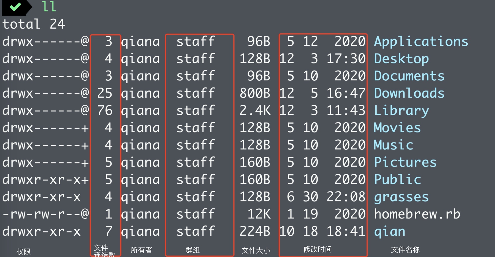

文档权限相关介绍
Linux对文档权限有着严格的控制，只有对文档有相关操作(像是读、写、执行)的权限时，才可以对文档进行相关操作。
Linux下文档的操作权限一般包括读:r(read)、写:w(write)、执行:x(execute)
另外，Linux下的文档还有身份权限，分别是文档所有者(User)、群组(Group)、其他人(Other)。
只有身份权限与操作权限都达到文档操作权限时，才能能够对文档进行操作。
执行命令ll查看文档详细信息

权限
从上图我们可以观察到，权限相关信息列共有10个字符。
<文档类型(1)> <文档拥有者权限(3)> <文档所属群组权限(3)> <其他人权限(3)>
例如
-rwxrwxrwx表示 文档类型为 文件，文档拥有者、群组和其他人都对其有读、写和执行的权限。
文档类型
权限标记的第一个字符表示文档类型
- [d]: 目录
- [-]: 文件
- [l]: 连结档(link file)
- [b]: 装置文件里面的可供储存的接口设备(可随机存取装置)
- [c]: 装置文件里面的串行端口设备，例如键盘、鼠标(一次性读取装置)
文档权限
文档权限标记的后9个字符，以3个为一组，分别表示文档拥有者、群组和其他人对文档的权限。
rwx的权限表示位置不会更换，若没有相关权限，使用-表示没有权限。
例如-rwxrw-r--表示：
- 文档为文件类型
- 文档拥有者对其拥有读、写、执行的权限
- 群组对其拥有读、写的权限
- 其他人对其仅有读的权限
修改文档权限
使用chmod（change file mode bits）修改文档权限,可以使用数字或者是符号来进行权限的变更。
数字类型改变文档权限
因为对文档的权限分别有读、写、执行。首先，我们先使用数字来表示文档权限
- 读(r):4
- 写(w):2
- 执行(x):1
- 无权限：0
每种身份(User\Group\Other)对应的权限数值为对文档操作权限数值的累加。
例如-rwxrw-r--
User: rwx:4+2+1 = 7
Group: rw-:4+2+0 = 6
Other: r--:4+0+0 =4
所以，用数字来表示改文档的权限为：764
数字类型修改文档权限语法：chmod [-R] <权限数值> <文件或文档名称>
[-R]:可选参数，进行递归的持续变更，即将文件下下所有文档都修改为设定权限‘
1 | # 修改文件test.js的文档权限文档所有者可读、可写，群组可读，其他人无权限 |
符号类型改变文档权限
使用u、g、o、a表示user、group、other，all
使用r、w、x表示读、写、执行
使用+、-、=表示添加权限、删除权限、设定权限。在+、-状态下，没有设定的权限状态不会发生变化。
例如：
- 设置文档权限
-rwxr-xrw-,
1 | chmod u=rwx,g=rx,o=rw test.js |
- 给group添加写的权限
1 | chmod g+w text.js |
- 给所有身份删除写的权限
1 | chmod a-w test.js |